知菌知藥 Part 3｜貓膽管炎（Feline Cholangitis）
主講：梅醫師｜知菌知藥系列第三堂（肝膽道感染）
2026 年 10 月 22 日｜知菌知藥系列 3 / 3｜課前預習版：先整理指定文獻，課後合併錄音逐字稿
⭐ 必記原則
- 膽管炎是貓最常見的肝臟疾病；貓常是「膽管」發炎，狗多是「肝實質」疾病
- 貓的總膽管和唯一一條胰管在十二指腸乳頭前會合 → 常合併胰臟炎、腸炎（triaditis）
- WSAVA 分三類：嗜中性球型（急性 ANC／慢性 CNC）、淋巴球型（LC）、肝吸蟲相關；CNC 和 LC 常重疊
- 急性嗜中性球型 ≈ 膽道細菌感染，多為腸道菌：E. coli、Enterococcus；厭氧菌以 Bacteroides、Clostridium 為主
- 膽汁流動受阻是細菌感染的溫床：一定要找膽結石、EHBO、膽囊病變、胰臟炎
- 臨床症狀、血檢、超音波都分不出 NC 和 LC；肝指數、膽紅素、超音波正常都不能排除膽管炎
- 盡量採膽汁做細胞學＋培養：看到嗜中性球＋細胞內細菌才確定不是污染；膽囊超音波正常 → 培養陰性的 NPV 96%
- 切片前查凝血、先給 vitamin K1 2–3 天；貓避免用半自動 Tru-Cut 槍（迷走神經性休克致死）
- ANC：依培養結果選藥，首選 amoxicillin／amox-clav（膽汁中濃度高），傳統療程 4–6 週，但最佳療程未知
- 厭食貓要積極餵食，避免脂肪肝；用腸道處方或高蛋白重症飼料，不要用限制蛋白的肝臟處方
- LC：先切片排除 FIP、貓肝病毒（hepadnavirus）再用免疫抑制劑量類固醇 ＋ UDCA ＋ SAMe
- 貓沒有類固醇誘發的 ALP 同功酶 → 用類固醇後肝指數上升要當成病情變差，停止免疫抑制
病例 Penelope：膽道結石阻塞的貓
▾課堂投影片（截圖）；病史與梅醫師的講解等逐字稿補上。
CBC
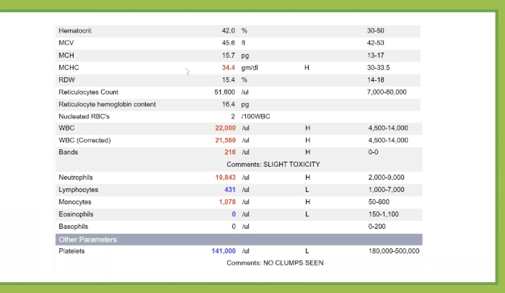
| 項目 | 結果 | 參考值 | 解讀 |
|---|---|---|---|
| Hct | 42.0% | 30–50 | 正常；網狀紅血球 51,600/µL（正常範圍內） |
| WBC | 22,000 /µL ↑ | 4,500–14,000 | 嗜中性球增多＋左移（帶狀核）＋輕度中毒性變化 → 發炎／感染 |
| Band / Neutrophil | 216 ↑／19,843 ↑ | 0／2,000–9,000 | |
| Lymphocyte | 431 ↓ | 1,000–7,000 | 淋巴球減少、單核球增多、嗜酸性球 0 → 合併壓力白血球像 |
| Monocyte | 1,078 ↑ | 50–600 | |
| Eosinophil | 0 ↓ | 150–1,100 | |
| Platelet | 141,000 ↓ | 180,000–500,000 | 輕度下降，沒有血小板凝集（不是假性） |
📘 解讀欄為整理時補充。
鑑別診斷
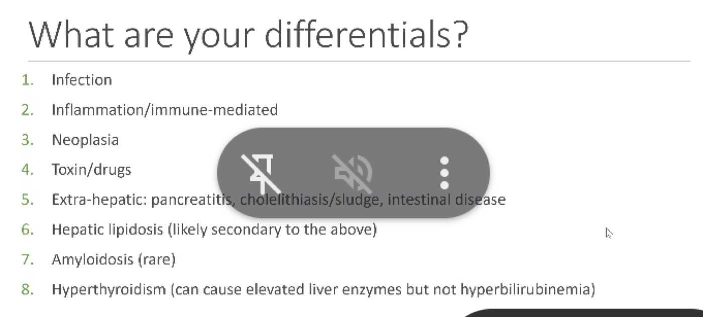
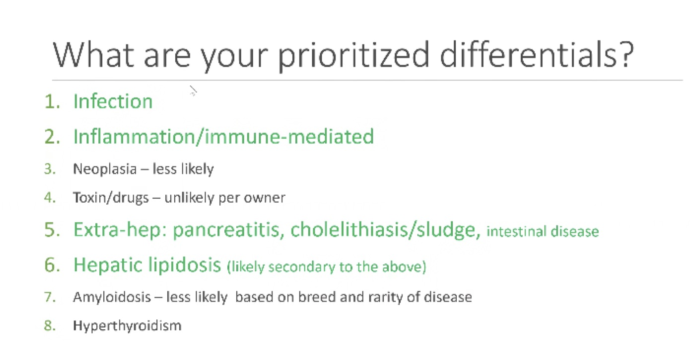
| # | 鑑別診斷 | 排序後 |
|---|---|---|
| 1 | 感染 | 優先 |
| 2 | 發炎／免疫媒介 | 優先 |
| 3 | 腫瘤 | 較不可能 |
| 4 | 毒物／藥物 | 飼主表示不太可能 |
| 5 | 肝外因素：胰臟炎、膽結石／膽泥、腸道疾病 | 優先 |
| 6 | 脂肪肝（多半續發於上述疾病） | 優先 |
| 7 | 類澱粉沉積（罕見） | 依品種與罕見程度，較不可能 |
| 8 | 甲狀腺功能亢進 | 會讓肝指數上升，但不會造成高膽紅素血症 |
腹部超音波
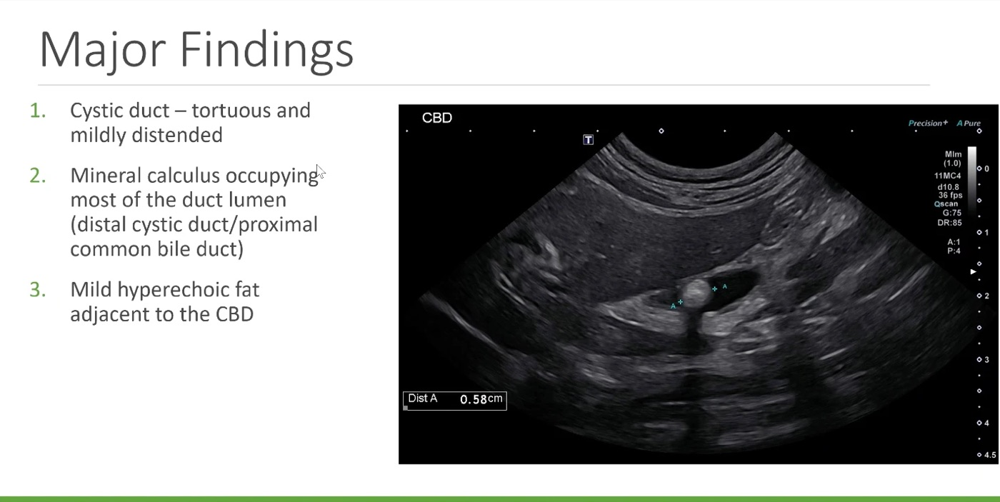
主要發現
- 膽囊管彎曲、輕度擴張
- 礦物質結石佔據大部分管腔（遠端膽囊管／近端總膽管），0.58 cm
- 總膽管旁脂肪輕度高回音
其他相關發現
- 肝臟高回音 → 脂肪肝 vs 代謝性 vs 感染／發炎；淋巴瘤傾向低回音
- 肝內膽管輕度擴張 → 表示膽道阻塞至少已經好幾天 ✍️ 筆記
- 胰臟：實質斑駁、胰臟周圍脂肪輕度高回音 → ± 慢性 vs 急性胰臟炎
- 腸胃道：正常
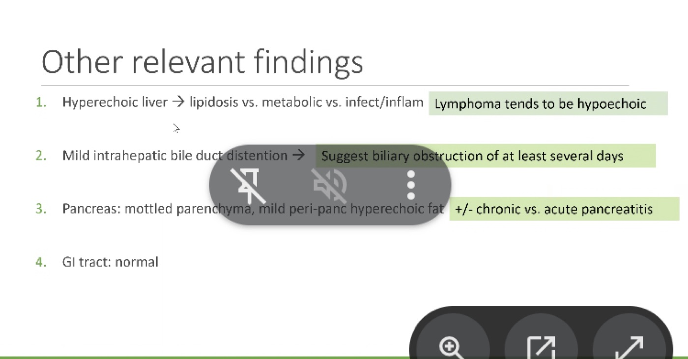
下一步怎麼做？
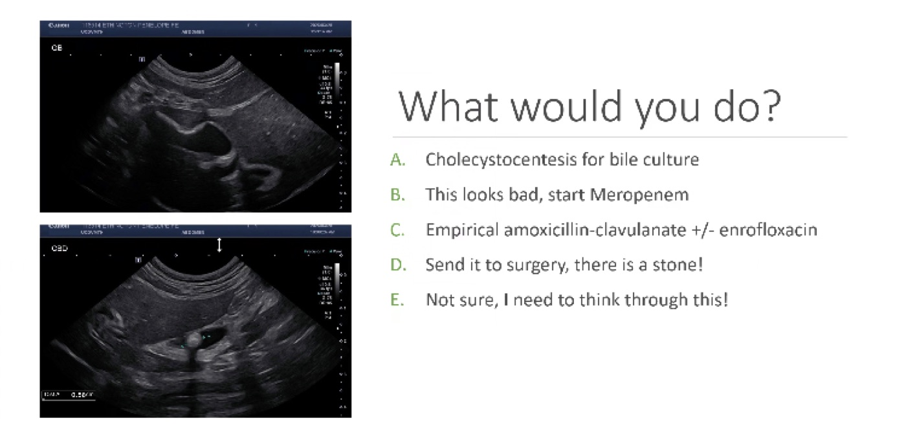
- A. 膽囊穿刺採膽汁做培養
- B. 看起來很糟，直接上 meropenem
- C. 經驗性 amoxicillin-clavulanate ± enrofloxacin
- D. 有結石，送手術！
- E. 我不確定，要再想一下
📘 文獻對照：Watson 建議盡量做膽汁細胞學＋培養、首選 amoxicillin／amox-clav、處理膽結石等影響膽汁流動的因素（見下方膽汁培養與ANC 治療）；Part 2 也提過 meropenem 要不惜代價避免。
每個肝膽病例都要問的問題
▾Q1｜有沒有感染？
膽結石：膽汁鬱積＋感染的溫床
- 膽結石造成膽汁鬱積（bile stasis），本身也是感染的核心（nidus）。
- 貓特殊的解剖構造讓感染更有機會發生。
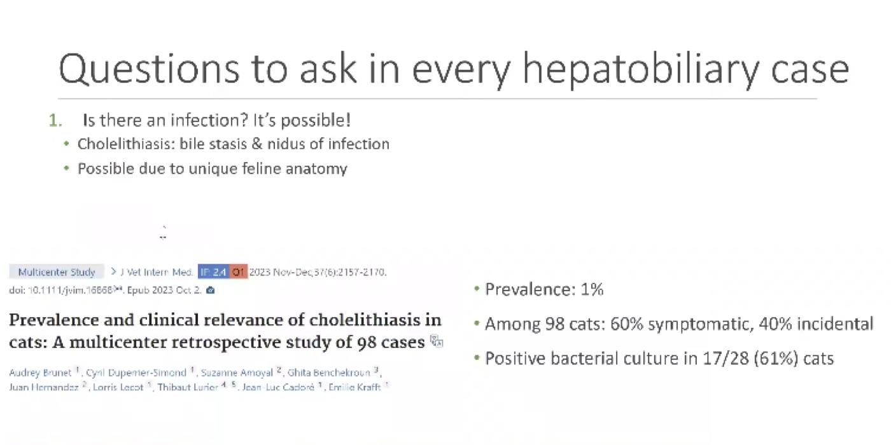
| Brunet 2023（多中心回溯，98 隻膽結石貓） | 結果 |
|---|---|
| 盛行率 | 1% |
| 有症狀 vs 偶然發現 | 60% 有症狀、40% 偶然發現 |
| 細菌培養陽性 | 17 / 28（61%） |
📘 和 Watson 回顧呼應：Center 2022 的 NC 貓有 42% 有膽結石（見下方嗜中性球型病因）。
貓狗膽道解剖差異
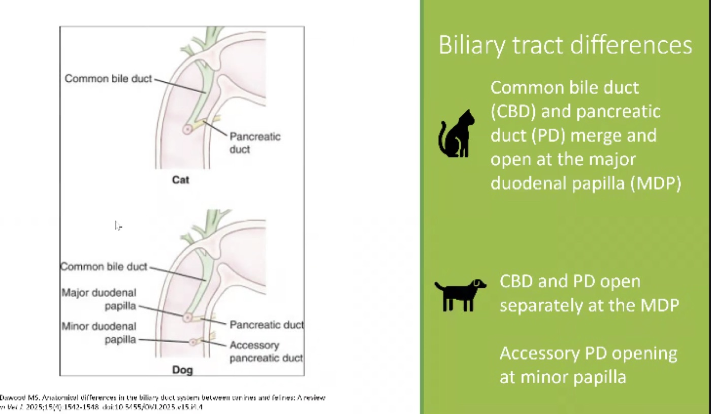
🐱 貓
- 總膽管（CBD）和胰管（PD）先會合，再一起開口於十二指腸大乳頭（major duodenal papilla）
🐶 狗
- CBD 和 PD 在大乳頭分別開口
- 另有副胰管開口於小乳頭（minor papilla）
怎麼知道是「細菌」？
- 一定要考慮伺機性／非典型感染，特別是正在用免疫抑制藥物的病患。
- 問接觸史：抓老鼠（鼠類）、吃生食。
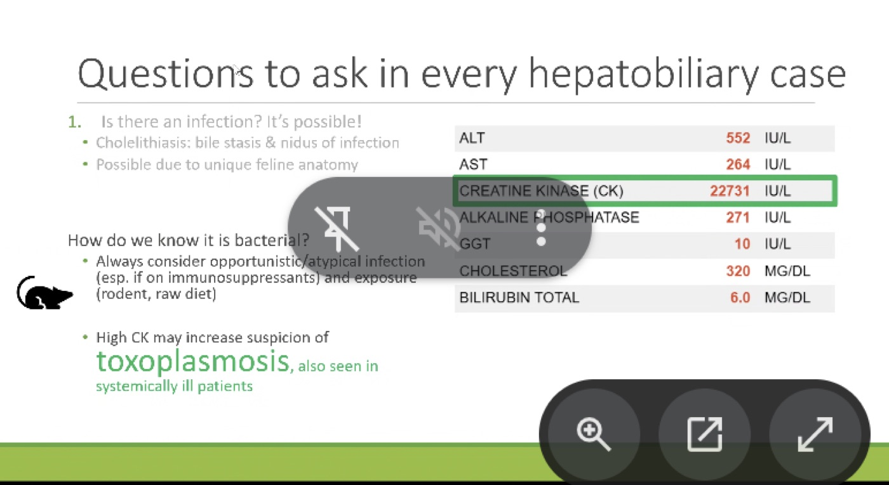
| 項目 | 結果 |
|---|---|
| ALT | 552 IU/L ↑ |
| AST | 264 IU/L ↑ |
| CK | 22,731 IU/L ↑↑（投影片特別框出） |
| ALP | 271 IU/L ↑ |
| GGT | 10 IU/L |
| 膽固醇 | 320 mg/dL ↑ |
| 總膽紅素 | 6.0 mg/dL ↑ |
膽汁培養陰性≠沒有感染 ✍️ 筆記
📘 呼應 Watson：合併多個部位的檢體（膽囊壁刮取或切片、壓碎的膽結石、肝組織）可以提高培養敏感度；培養陰性但仍懷疑時，可對組織做 eubacterial FISH（見膽汁細胞學與培養）。
Q2｜還有哪些鑑別診斷也很可能？
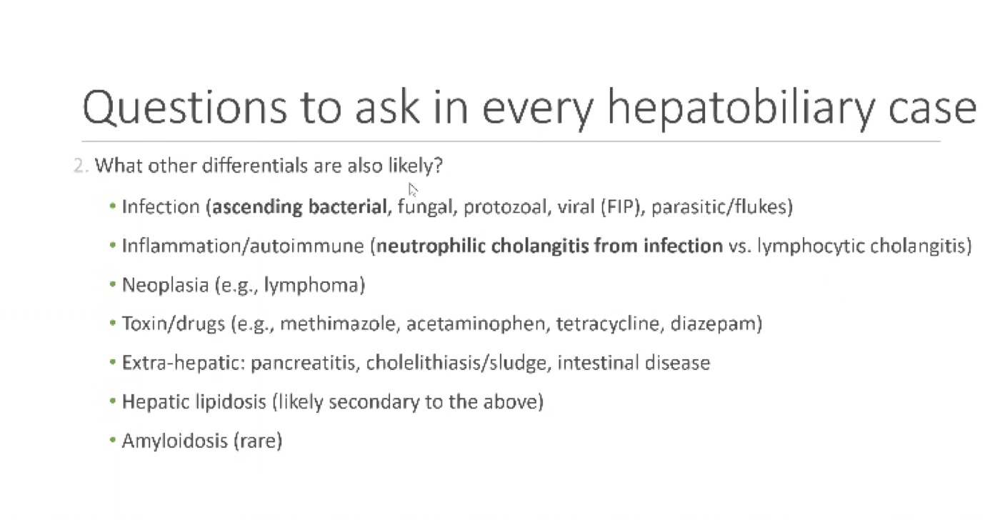
| 類別 | 內容 |
|---|---|
| 感染 | 上行性細菌感染、黴菌、原蟲、病毒（FIP）、寄生蟲／肝吸蟲 |
| 發炎／自體免疫 | 感染造成的嗜中性球型膽管炎 vs 淋巴球型膽管炎 |
| 腫瘤 | 例如淋巴瘤 |
| 毒物／藥物 | 例如 methimazole、acetaminophen、tetracycline、diazepam |
| 肝外因素 | 胰臟炎、膽結石／膽泥、腸道疾病 |
| 脂肪肝 | 多半續發於上述疾病 |
| 類澱粉沉積 | 罕見 |
為什麼要考慮合併／原發疾病？
急性（化膿性）嗜中性球型膽管炎／膽管肝炎的貓，可能同時有（引用 Watson 2025）：
- 膽結石——不是每個都看得到超音波上（Center 2022：只有 58% 在影像上看到）
- 胰臟炎
- 慢性發炎性腸病（IBD）
- 膽管板畸形（ductal plate malformation）
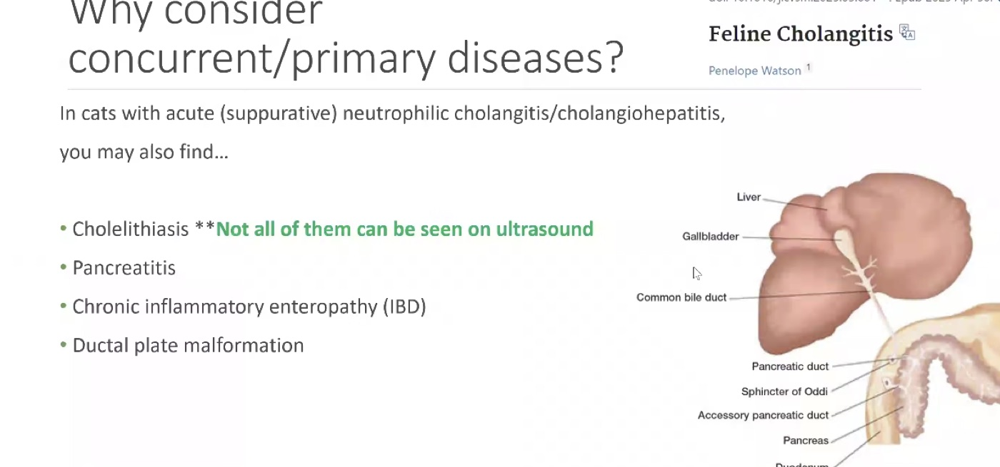
- 穩定的病患，值得先經驗性給抗生素（± 膽汁培養結果）至少 24–48 小時。
- 細菌性膽管炎的血檢和／或超音波異常，治療後可以明顯改善。
- ✍️ 筆記 可以一開始就嘗試性治療看看，反應通常很快。
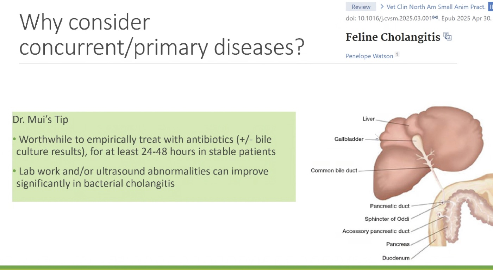
Q4｜什麼時候適合做膽囊穿刺？
一般來說，貓的膽汁比狗更容易培養出細菌。（投影片跳過 Q3，待逐字稿確認。）
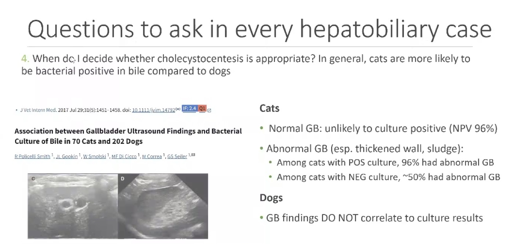
🐱 貓
- 膽囊正常：不太可能培養陽性（NPV 96%）
- 膽囊異常（尤其壁增厚、膽泥）：
培養陽性的貓 96% 膽囊異常
培養陰性的貓也有約 50% 膽囊異常
🐶 狗
- 膽囊超音波表現和培養結果沒有相關
膽泥（sludge）不等於感染
- 新研究顯示，貓的膽囊膽泥可能只是偶然／非特異性的發現；對沒有症狀的貓，要謹慎使用抗生素或其他治療。
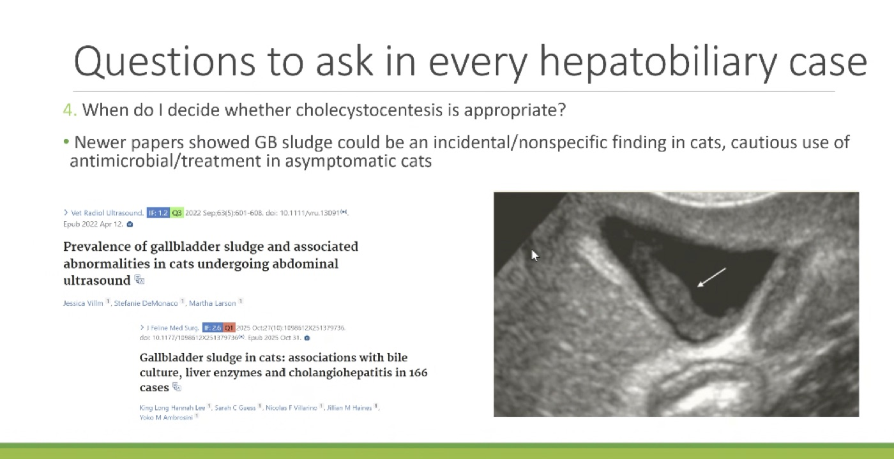
⭐ Q5｜肝膽感染的常見病原？ Q6｜依病原怎麼選經驗性用藥？
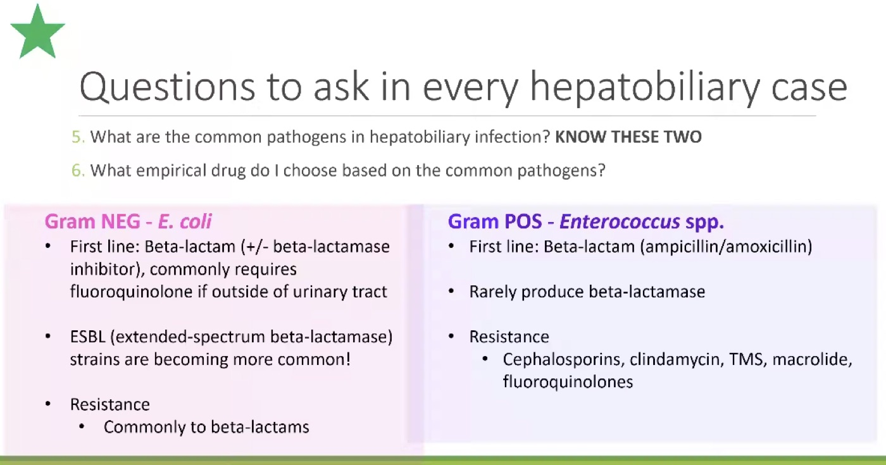
Gram（−）E. coli
- β-lactam（± β-lactamase 抑制劑）
- 感染在泌尿道以外時，常需要加 fluoroquinolone
- ESBL（廣效 β-lactamase）菌株越來越常見！
- 常對 β-lactam 抗藥
Gram（+）Enterococcus spp.
- β-lactam（ampicillin／amoxicillin）
- 很少產生 β-lactamase
- Cephalosporin、clindamycin、TMS、macrolide、fluoroquinolone
📘 對照開場病例的選項 C「amox-clav ± enrofloxacin」：amox-clav 涵蓋兩者，enrofloxacin 補 E. coli，但對 Enterococcus 無效。Part 2 也提過 Enterococcus 對 cephalosporin、clindamycin 天生抗藥，最簡單的 amoxicillin 反而有效（見 Part 2 Q6）。
Q5、Q6｜別忘了絕對厭氧菌！
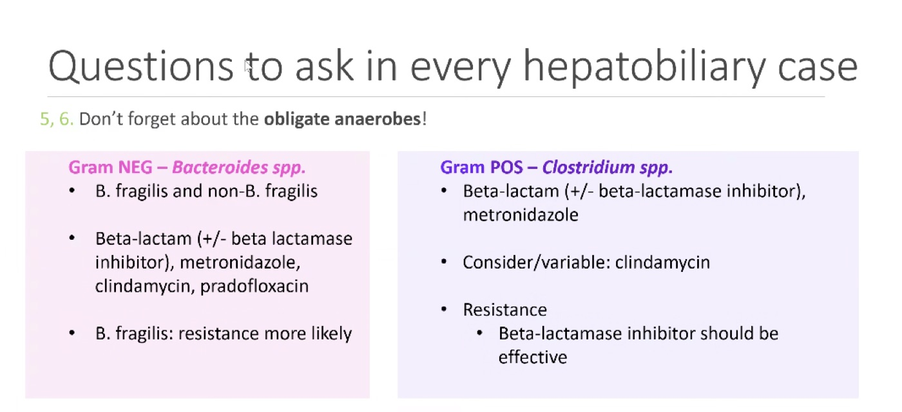
Gram（−）Bacteroides spp.
- B. fragilis 和非 B. fragilis
- 可用：β-lactam（± β-lactamase 抑制劑）、metronidazole、clindamycin、pradofloxacin
- B. fragilis：比較可能有抗藥性
Gram（+）Clostridium spp.
- 可用：β-lactam（± β-lactamase 抑制劑）、metronidazole
- 可考慮但效果不一：clindamycin
- 抗藥性：加 β-lactamase 抑制劑應該有效
📘 和 Watson 回顧一致：最常見的厭氧菌是 Bacteroides 和 Clostridium（見嗜中性球型病因）。Pradofloxacin 是唯一列出的 fluoroquinolone——enrofloxacin 對厭氧菌涵蓋不足。
Q5｜別忘了弓蟲（Toxoplasma）！
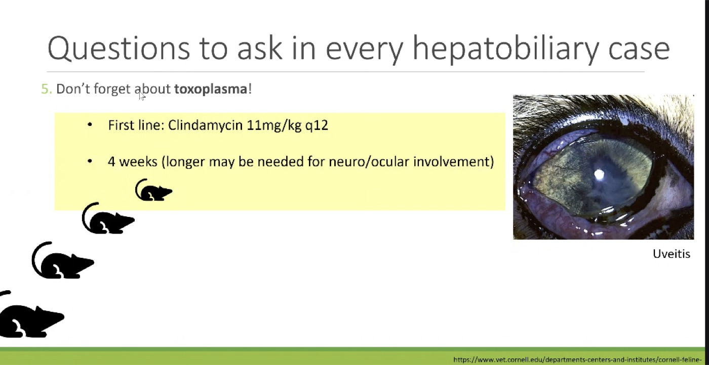
| 項目 | 內容 |
|---|---|
| 第一線 | Clindamycin 11 mg/kg q12h |
| 療程 | 4 週；有神經或眼睛（葡萄膜炎）侵犯時可能需要更久 |
| 線索 | 抓老鼠、吃生食、CK 明顯上升、葡萄膜炎（見上方 Q1） |
Q7｜怎麼監測治療反應？ Q8｜什麼時候停藥？
🏥 住院 protocol
- 貓每天監測生化（肝指數、膽紅素、電解質）——因為貓的肝指數半衰期短
- 狗可以 q2d，但電解質仍建議每天監測
- 注意醫源性貧血，尤其是貓
- 反應好的病患：頭幾天內生化就應該改善
- 擔心膽道阻塞時，連續追蹤超音波
🏠 門診 protocol（經驗）
- 依臨床反應，每 1–2 週監測生化，直到異常消失
- 急性細菌性膽管炎：多數 2 週內血檢恢復正常
- 沒恢復 → 要重新評估（抗生素選錯？根本不是感染？）
- 停藥後 1–2 週再驗一次肝指數
療程長度
| 情況 | 療程 |
|---|---|
| 文獻報告範圍 | 2–8 週，最長到 12 週 |
| 反應快（48–72 小時內） | 可考慮只治療 2–3 週 |
| 常見做法 | 先開 4 週；有潛在疾病的會延長到 8 週 |
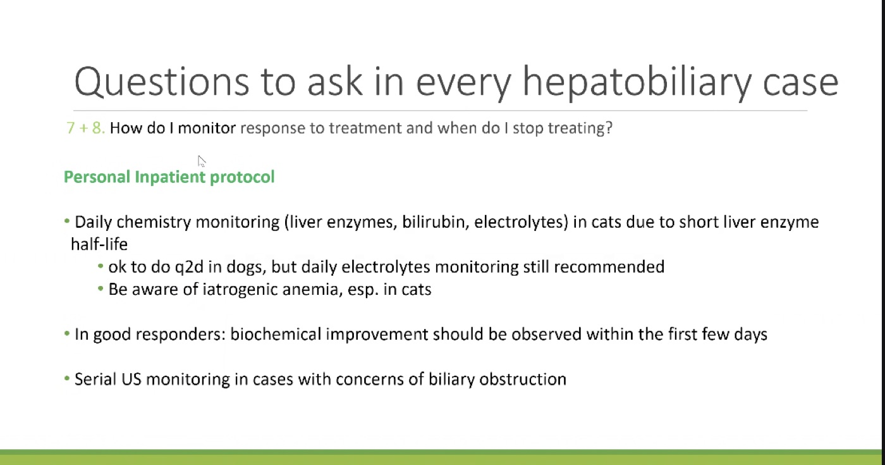
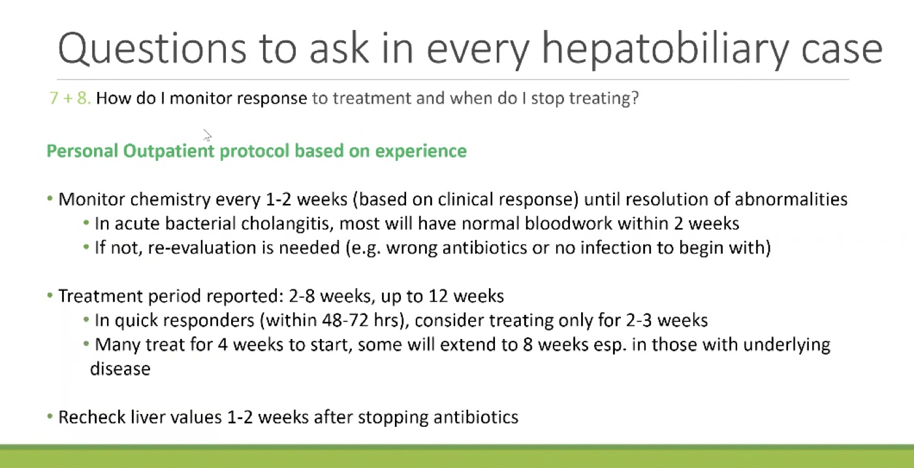
📘 對照：Watson 回顧寫「傳統 4–6 週，最佳療程未知」；梅醫師的做法是依反應速度調整，反應快的可縮短到 2–3 週。這也回答了課前思考題第 2 題的一部分。
回到 Penelope：抗生素選擇、一週與四週追蹤
▾後續處置
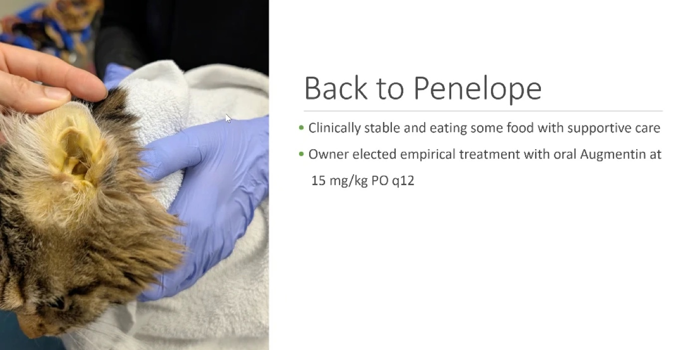
- 支持性治療後臨床穩定，開始吃一些食物。
- 飼主選擇經驗性治療：口服 Augmentin 15 mg/kg PO q12h。
📘 呼應 Dr. Mui's Tip：穩定的病患，值得先經驗性給抗生素至少 24–48 小時（見 每個肝膽病例的問題）。
Augmentin 涵蓋哪些菌？
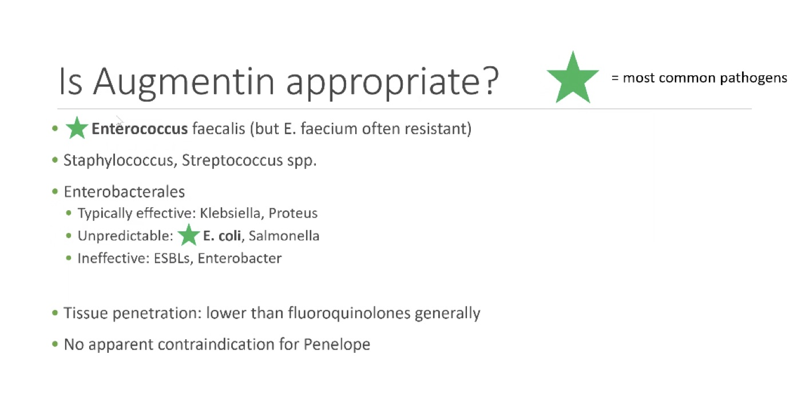
| 細菌 | Augmentin 效果 |
|---|---|
| ★ Enterococcus faecalis | 有效（但 E. faecium 常抗藥） |
| Staphylococcus、Streptococcus spp. | 有效 |
| Enterobacterales：Klebsiella、Proteus | 通常有效 |
| Enterobacterales：★ E. coli、Salmonella | 難以預測 |
| Enterobacterales：ESBL、Enterobacter | 無效 |
- 組織穿透力：一般比 fluoroquinolone 差。
- Penelope 沒有明顯禁忌症。
Fluoroquinolone：注射劑型
- 濃度依賴型，組織穿透力極佳。
- IV 劑型只有 enrofloxacin（Baytril）。
- 貓：5 mg/kg q24h——為了避免視網膜毒性而降低劑量。
- 狗：10 mg/kg q24h（依藥敏報告的 SDD〔劑量依賴型敏感〕菌株，有時可到 20 mg/kg）。
- 就算菌株敏感，貓的降低劑量也可能讓部分貓治療無效。
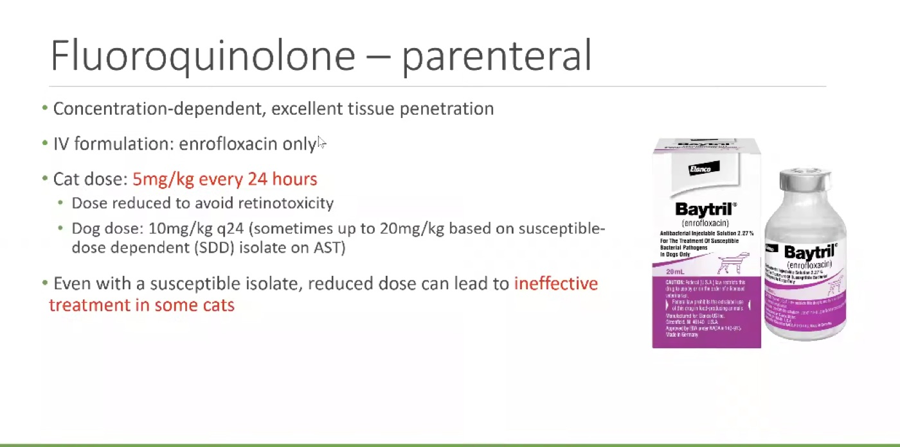
Fluoroquinolone：口服劑型
| 藥物 | 貓劑量 | 劑型 | 涵蓋範圍與定位 |
|---|---|---|---|
| Marbofloxacin | 2.75–5.5 mg/kg PO q24h | 只有錠劑 | 最適合革蘭氏陰性需氧菌（如 Enterobacterales）；住院 IV enrofloxacin 反應好的貓，出院改這個 |
| Pradofloxacin | 7.5 mg/kg PO q24h | 只有液劑 | 四象限涵蓋：革蘭氏陽性、陰性、需氧、厭氧，還有 Bartonella、Mycoplasma；應依培養與藥敏結果使用 |
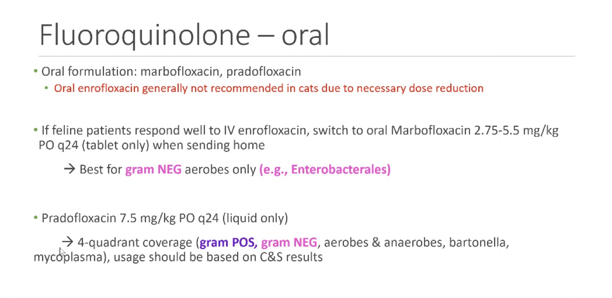
一週後：臨床改善，但……
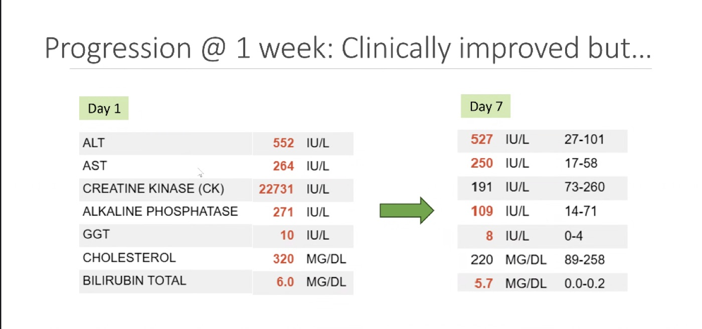
| 項目 | Day 1 | Day 7 | 參考值 |
|---|---|---|---|
| ALT | 552 | 527 ↑ | 27–101 IU/L |
| AST | 264 | 250 ↑ | 17–58 IU/L |
| CK | 22,731 | 191（正常） | 73–260 IU/L |
| ALP | 271 | 109 ↑ | 14–71 IU/L |
| GGT | 10 | 8 ↑ | 0–4 IU/L |
| 膽固醇 | 320 | 220（正常） | 89–258 mg/dL |
| 總膽紅素 | 6.0 | 5.7 ↑ | 0.0–0.2 mg/dL |
📘 CK、膽固醇恢復正常，ALP 下降；但 ALT、AST、膽紅素幾乎沒變。對照 Q7／Q8：反應好的病患「頭幾天內」生化就應該改善。
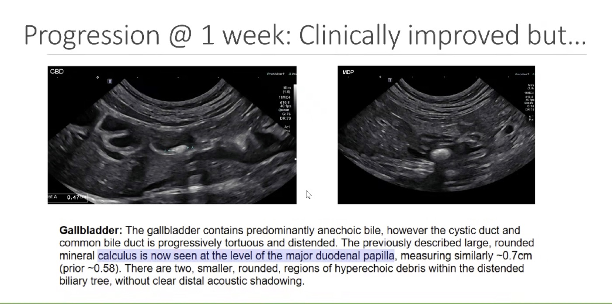
- 膽囊內主要是無回音膽汁，但膽囊管和總膽管越來越彎曲、擴張。
- 之前那顆大的圓形礦物質結石，現在在十二指腸大乳頭（major duodenal papilla）的位置，約 0.7 cm（之前約 0.58 cm）。
- 擴張的膽道內另有兩團較小、圓形的高回音碎屑，沒有明顯聲影。
✍️ 壞消息 筆記
- 膽道擴張（biliary distension）加劇
✍️ 好消息 筆記
- 結石移位了（往下移到十二指腸大乳頭）
一週後怎麼辦？
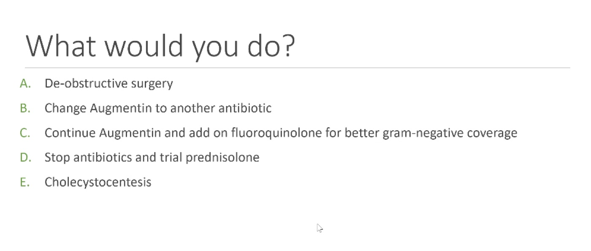
- A. 解除阻塞的手術
- B. 把 Augmentin 換成其他抗生素
- C. 繼續 Augmentin，加 fluoroquinolone 加強革蘭氏陰性涵蓋
- D. 停抗生素，試用 prednisolone
- E. 膽囊穿刺
實際做法：「不是標準做法！」
為什麼？
- 飼主拒絕手術。
- 病患對 IV 輸液和加上止痛（buprenorphine）反應很好。
- 結石從近端總膽管移到十二指腸大乳頭 → 有機會自己排出。
- 如果降低發炎，可能讓結石通過。
- ⚠️ 注意：有感染的病患用 pred 有風險。
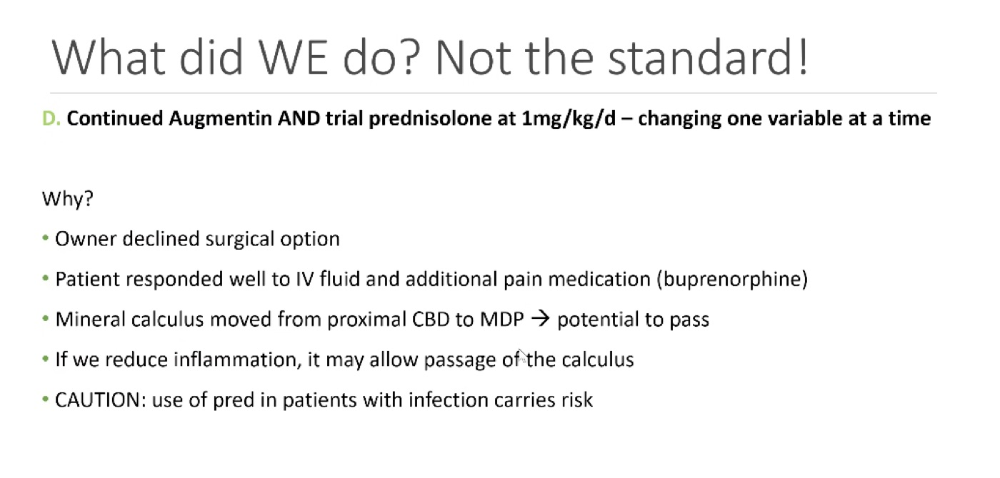
四週後：Penelope 完全恢復！
| 項目 | Day 1 | Day 7 | 4 週 | 參考值 |
|---|---|---|---|---|
| ALT | 552 | 527 | 29 | 27–101 |
| AST | 264 | 250 | 15（L） | 17–58 |
| CK | 22,731 | 191 | 53（L） | 73–260 |
| ALP | 271 | 109 | 74（H） | 14–71 |
| GGT | 10 | 8 | <3 | 0–4 |
| 膽固醇 | 320 | 220 | 290（H） | 89–258 |
| 總膽紅素 | 6.0 | 5.7 | 0.6（H） | 0.0–0.2 |
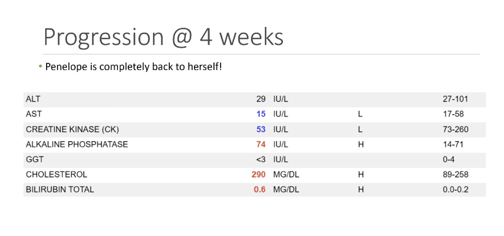
四週超音波
- 膽囊壁正常；膽囊內有少量會產生聲影的礦物質沉積（1 cm），近端膽囊管也有（0.8 cm）。
- 膽囊管擴張、彎曲比之前改善；總膽管仍中度擴張（0.60 cm，之前 0.53 cm），管壁輕度增厚但比之前改善。
- 之前在十二指腸大乳頭的大結石和總膽管內的小結石都不見了——結石排出了。
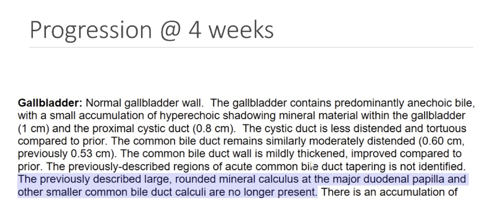
講者的推測
- 總膽管結石造成有症狀的膽道阻塞。
- 對 Augmentin 有臨床反應（雖然生化沒改善）→ 很可能有續發的上行性細菌感染。
- Prednisolone 可能降低發炎 → 增加總膽管管徑，幫助結石排出。
- Prednisolone 也可能處理了原發的腸道疾病。
- Q9｜處理風險因子：送 Texas A&M GI panel、試水解蛋白飲食。
- 細菌性膽管炎可能是 prednisolone 的禁忌症：每個病例都要評估，並和飼主討論風險。
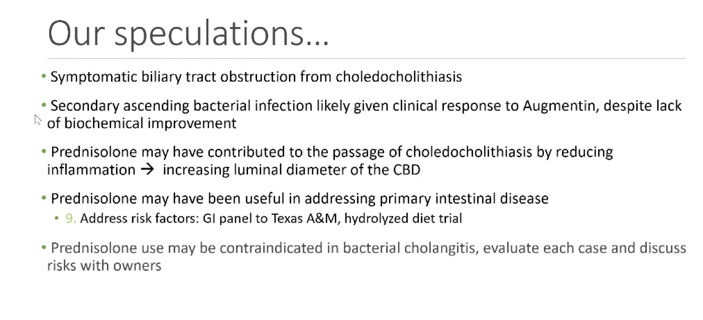
📘 對照 Watson：作者主張沒有切片不要用免疫抑制劑量，Penelope 用的是 1 mg/kg/d（抗發炎劑量），且持續給抗生素。
病例 Moonie：10 歲已結紮公 DSH
▾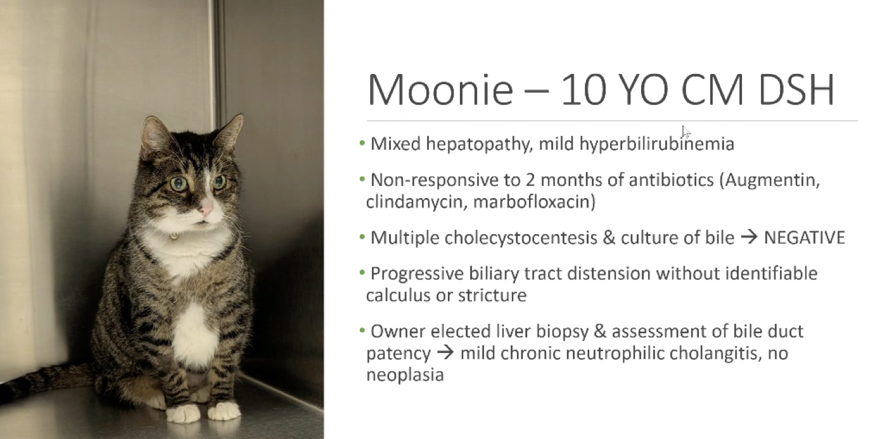
- 混合型肝病變（mixed hepatopathy）、輕度高膽紅素血症。
- 兩個月抗生素無效（Augmentin、clindamycin、marbofloxacin）。
- 多次膽囊穿刺＋膽汁培養 → 都陰性。
- 膽道持續擴張，但找不到結石或狹窄。
- 飼主選擇肝臟切片＋評估膽管通暢度 → 輕度慢性嗜中性球型膽管炎（CNC），沒有腫瘤。
📘 對照 Watson：抗生素反應不佳時要重新培養、考慮切片；CNC 可能是慢性感染，也可能和膽道阻塞或免疫媒介有關（見分類與爭議、慢性型治療）。
切片時再做一次肝臟與膽汁的需氧＋厭氧培養
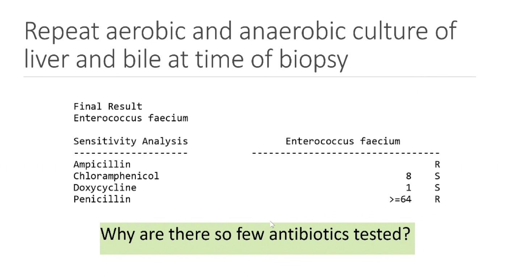
| 最終結果：Enterococcus faecium | ||
|---|---|---|
| 藥物 | MIC | 判讀 |
| Ampicillin | — | R |
| Chloramphenicol | 8 | S |
| Doxycycline | 1 | S |
| Penicillin | ≥64 | R |
Gram（+）Enterococcus spp.（回顧）
- 第一線：β-lactam（ampicillin／amoxicillin）
— E. faecium（Moonie）常對 ampicillin 抗藥，和 E. faecalis 不同 - 很少產生 β-lactamase
- 對很多藥抗藥 ☹️：cephalosporin、clindamycin、TMS、macrolide、fluoroquinolone
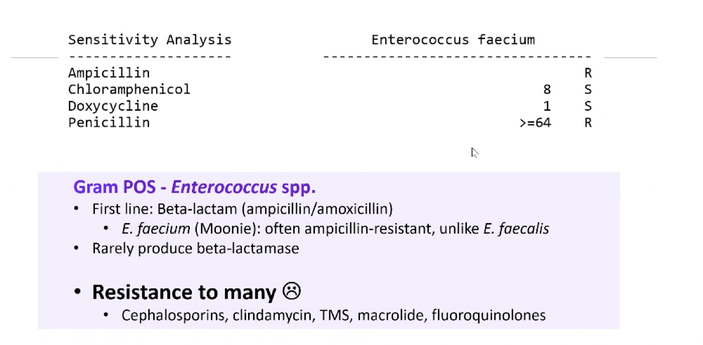
📘 這解釋了 Moonie 前兩個月的抗生素為什麼都沒效：Augmentin（E. faecium 常對 ampicillin 抗藥）、clindamycin 和 marbofloxacin（Enterococcus 天生或常見抗藥）都打不到。也呼應「回到 Penelope」的表：Augmentin 對 E. faecalis 有效、但 E. faecium 常抗藥。
要選哪個抗生素？Chloramphenicol
藥敏只剩 chloramphenicol（S，MIC 8）和 doxycycline（S，MIC 1）可選。
Chloramphenicol
- 貓的藥物毒性風險較高（肝臟葡萄糖醛酸化能力較低）→ 能避免就避免
- 劑量：12.5–20 mg/kg PO q12h——不要用更高的劑量
- 組織穿透力極佳
- 可逆性骨髓抑制很常見
- 人接觸要戴手套
要選哪個抗生素？Doxycycline
Doxycycline
- 有食道炎／食道狹窄風險：給藥後一定要接著給水，或用懸浮液、裝進明膠膠囊
- 劑量：5 mg/kg PO q12h
- 組織穿透力極佳
- 後天的 tetracycline 抗藥性很常見
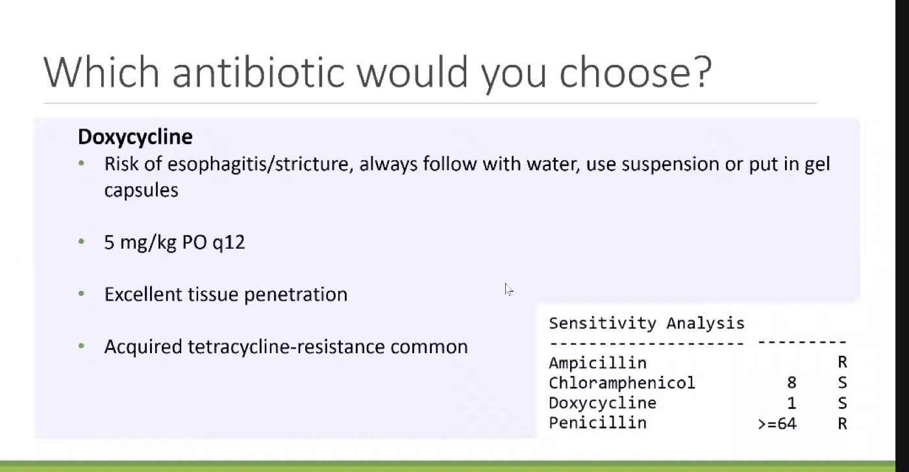
📘 兩個選項的取捨：chloramphenicol 在貓毒性風險高、要避免；doxycycline 安全性較好，但後天抗藥常見，長療程擔心抗藥性。Moonie 最後選哪個，等後續投影片或逐字稿。
結果：改用 doxycycline
- 用 doxycycline 2 週內所有生化異常都恢復正常。
- 總療程 8 週。
- 7 年後仍然狀況良好。
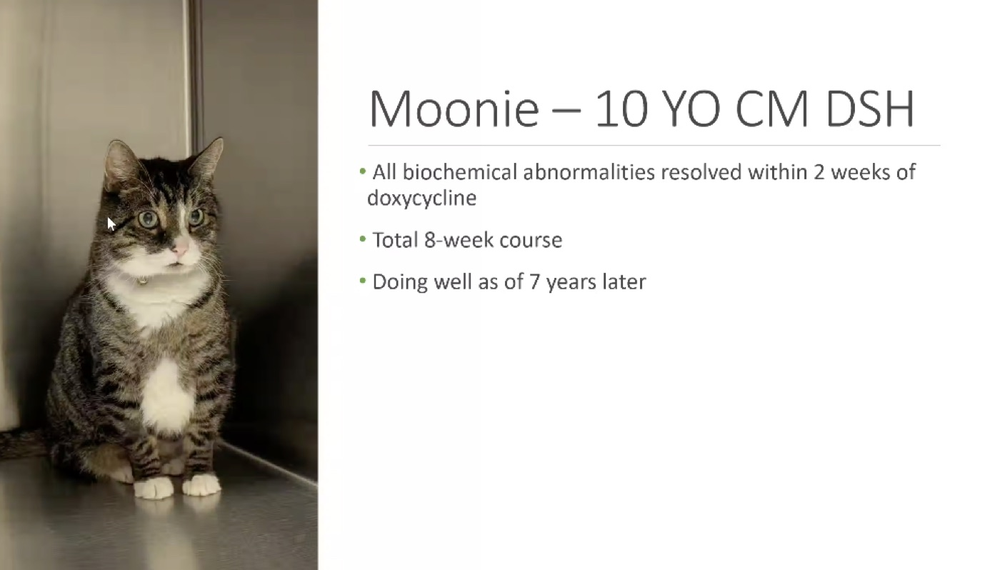
📘 對照 Q7／Q8：反應好時 2 週內血檢會正常；Moonie 有慢性病程（CNC），療程延長到 8 週，符合「有潛在疾病延長到 8 週」的做法。也提醒：培養陰性、抗生素無效時，切片＋組織培養可能找到被漏掉的抗藥菌。
ISCAID 指引資源
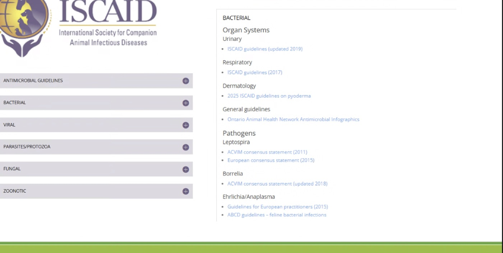
- 器官系統指引：泌尿（2019 更新）、呼吸（2017）、皮膚（2025 膿皮症指引）、Ontario Animal Health Network 抗生素圖卡。
- 病原：Leptospira（ACVIM 2011、歐洲 2015）、Borrelia（ACVIM 2018 更新）、Ehrlichia／Anaplasma（歐洲 2015、ABCD 貓細菌感染指引）。
- 目前沒有肝膽感染的 ISCAID 指引——這也是本堂的處置多來自專家意見的原因。
📘 完整整理見 Part 2 ISCAID 指引資源。
為什麼貓特別容易得膽管炎？ 📄 文獻
▾流行病學
- 英國、紐西蘭、日本的病理研究，膽管炎都是貓最常見的肝病（各類別比例不同）。
- 美國早期最常見的貓肝病反而是脂肪肝（hepatic lipidosis）；地區差異的原因不明。
- 貓多是發炎性膽道疾病；狗多是肝實質疾病。
解剖：膽管和胰管共用一個出口 🖍️ 劃線
🐱 貓
- 通常只有一條胰管
- 胰管在 sphincter of Oddi 和總膽管會合，再一起開口到十二指腸
- → 肝、胰、腸同時發炎很常見（triaditis）
🐶 狗
- 通常有兩條胰管
- 和膽管分開開口到十二指腸
- → 狗沒有公認的 triaditis
作者提醒：解剖構造應該不是唯一原因；貓肝病的研究本來就少，對病因和治療的理解都受限。
肝吸蟲：流行地區的鑑別診斷 🖍️ 劃線
住在流行地區、切片上有明顯膽管周圍與門脈區纖維化的貓，要想到肝吸蟲相關的慢性膽管炎。這篇回顧不深入討論。
WSAVA 組織學分類與爭議 📄 文獻
▾四種類別（重新整理）
| 類別 | 組織學特徵 | 舊稱／其他名稱 | 問題 |
|---|---|---|---|
| 急性嗜中性球型（ANC） | 嗜中性球包圍、侵入膽管；可見嗜中性球在膽管腔內 🖍️ | 化膿性／滲出性膽管炎、膽管肝炎 | 真正急性的沒有爭議；多數有細菌感染 |
| 慢性嗜中性球型（CNC） | 門脈區混合型浸潤：嗜中性球＋淋巴球＋漿細胞，± 纖維化、膽管增生 | 非化膿性膽管炎／膽管肝炎（和 LC 重疊） | 和 LC 在病理上可能重疊 |
| 淋巴球型（LC） | 淋巴球浸潤門脈區、以膽管為中心，可能侵入膽管上皮；常伴門脈纖維化、膽管增生 | 淋巴球性膽管肝炎、淋巴球性門脈肝炎（LPH）、慢性膽管肝炎、硬化性膽管炎 | 和 CNC 重疊；1996 年描述、沒有膽道侵犯的 LPH 可能不是同一個病 |
| 肝吸蟲相關慢性膽管炎 | 大膽管擴張、明顯膽管周圍與門脈纖維化、輕中度混合發炎，嗜酸性球數量不定 | — | 流行地區常見 |
- 發炎穿過 limiting plate（門脈區邊界）進入肝實質，就改稱 cholangiohepatitis（膽管肝炎）。
- 破壞性膽管炎（destructive cholangitis）：小門脈區膽管被破壞消失，推測和藥物反應或病毒有關，目前可能只見於狗；但部分貓的慢性膽管炎也看得到膽管消失（ductopenia）。
- 病理切片偶爾報 small cell lymphoma：大量淋巴球圍繞膽管的 LC，主要鑑別診斷就是小細胞淋巴瘤。
為什麼分類「不令人滿意」？ 🖍️ 劃線
急性嗜中性球型
慢性嗜中性球型
淋巴球型
ANC → CNC
- 膽汁流動長期受阻（慢性 EHBO、膽結石）讓急性細菌感染轉成慢性
- 少量淋巴球、輕微纖維化或膽管增生時，病理醫師判讀不一
CNC ↔ LC
- LC 之上疊加壞死或續發細菌感染 → 看起來像 CNC
- 原發的慢性細菌感染 → 續發免疫媒介疾病
- 大量淋巴球＋纖維化、各門脈區表現不同：要多少嗜中性球或幾個門脈區才算 CNC？
- 有些研究把 ANC 和 CNC 分開，有些只分「嗜中性球型 vs 淋巴球型」，CNC 被歸到哪一邊不清楚。
- WSAVA 標準之前的研究用的名稱，對不上現在的分類。
- 多數貓只有一個時間點的一次切片，看不到病程變化；膽道病變在肝內分布不均。
- 所以作者在文中把 NC 再拆成 ANC 和 CNC 來討論。
嗜中性球型膽管炎：細菌從哪裡來？ 📄 文獻
▾盛行率
- 英國、日本病理研究中最常見的貓肝病（分別 20.5%、28%），紐西蘭第二常見（9.7%）——但這些研究把 ANC 和 CNC 合併計算。
- 美國一個 44 隻貓的屍解研究分開算：ANC 7 隻、CNC 33 隻。
- 最大宗病例：Sharon Center 2022，同一作者近 40 年、168 隻化膿性膽管炎貓（ANC＋CNC，納入條件是門脈區、以膽管為中心的嗜中性球為主）。🖍️ 手寫「Sharon Center's 2022 study」
感染途徑：上行 vs 血行
- ANC 被認為是膽道細菌感染：從小腸上行，或經門脈血／全身血行而來。常合併膽囊炎。
- FISH 研究（Twedt 2014） 🖍️ 劃線：39 隻發炎性肝病貓 vs 19 隻正常貓，發炎組細菌陽性、肝內細菌明顯較多。但細菌大多在門脈血管、竇狀隙和肝實質，而不在膽管 → 支持「經門脈的細菌轉位（translocation）」，而不是上行性膽道感染。
常見菌種
腸道來源（最常見）
- Escherichia coli
- Enterococcus spp.
厭氧菌
- Bacteroides
- Clostridium
少見／意義不明
- Streptococcus、Salmonella Typhimurium
- Providencia 🖍️（少見菌 → 盡量做培養）
- 耐膽汁 Helicobacter 🖍️：正常貓膽汁也分離得到，意義不明
Brain 2006（澳洲，6 隻膽汁細胞學＋培養確診）：E. coli 4 例（其中 1 例合併 Streptococcus、1 例合併 Clostridium），Streptococcus 1 例，Salmonella Typhimurium 1 例。
關鍵：膽汁流動受阻 🖍️ 劃線
細菌不管從膽道或血行進到肝臟，都會被 Kupffer 細胞清除、排到膽汁裡；膽汁流動一受阻，細菌就容易定殖。檢查時一定要找這些因素。
| Center 2022（168 隻 NC） | 比例 |
|---|---|
| 肝外膽道阻塞（EHBO） | 53% |
| 膽結石 | 42%——其中只有 58% 在影像上看得到 |
| 膽管板畸形（ductal plate malformation） | 44%（這些貓較年輕） |
| 切片確診慢性發炎性腸病（IBD） | 60 / 68 |
| 胰臟炎 | 41 / 44（其中 28 隻有 EHBO，20 / 28 有膽結石） |
- 最早的病例報告：4 / 4 隻 CNC 有確定或可能的膽道阻塞（2 隻膽結石、2 隻慢性胰臟炎），1 隻 ANC 有膽囊囊腫。
- WSAVA 認為 CNC 也是細菌造成；作者認為部分是，但也可能是慢性膽道阻塞，或 LC 續發肝壞死／感染。
- 少數貓有其他易感因素，診斷時要問：牙科處置、吃生食、FIV 陽性、正在用免疫抑制藥物。
淋巴球型膽管炎：免疫媒介？ 📄 文獻
▾歷史
- 1982 年美國首次報告 3 隻貓，1984 年英國 21 隻；早期英國較多，現在美國也很常見。
- 有些研究 LC 是最常見的膽管炎，有些則比 NC 少。
- 病因推測是免疫媒介，但貓的慢性膽道疾病可能是「組織學長得像、病因不同」的一群症候群；早期文獻就認為有急性／慢性期，還有組織上不同的淋巴球性門脈肝炎。
支持免疫媒介的證據
| 研究 | 發現 |
|---|---|
| 早期免疫組化 🖍️ | 門脈周圍淋巴球以 CD3+ T 細胞為主，部分浸潤膽管上皮；急性病例有 piecemeal necrosis |
| Warren 2011（51 LC vs 27 肝淋巴瘤）🖍️ | LC 中 68.6% T 細胞為主、29.4% B／T 各半、只有 1 例 B 細胞為主；發炎細胞攻擊膽管、膽管消失（ductopenia） → 像免疫媒介的膽管破壞 |
| Bestwick 碩士論文（劍橋） | 34 隻慢性膽管炎貓（LC＋CNC）vs 12 隻非發炎肝病對照：7 / 34 有抗肝抗體（4 隻核染色似 ANA、3 隻細胞質染色），對照組 0；部分切片有 ductopenia 和同心圓狀膽管周圍纖維化（像人的 PSC）🖍️。但 40% 是 B 細胞為主，和之前研究不同（可能因為納入了 CNC） |
Signalment 與臨床症狀 📄 文獻
▾年齡、性別、品種
- 任何年齡都可能，多為中老年（NC 可能反映背後的慢性病或膽道阻塞）
- 早期認為 LC 好發年輕貓，新研究顯示各年齡都有
- 只有膽管炎的貓，比合併腸胰疾病的貓年輕（Fragkou 2016）
- 多數研究無性別傾向（Otte 2013 公貓明顯較多）
- NC 可能好發純種 🖍️：波斯、英短、緬甸、暹羅；Center 2022 中最多的是 DSH，但英國盛行率研究 DSH 反而較少
- LC：早期認為波斯貓多，新研究無品種傾向或緬甸、暹羅較多
臨床症狀
- 典型：嗜睡、食慾下降、嘔吐
- 黃疸較少；NC 發燒的不到一半
- 腹痛不常見，但貓很會藏痛，可能低估
- 近一半膽管炎貓沒有症狀（Fragkou 2016）🖍️；合併 IBD＋胰臟炎的較常有症狀
- 早期英國報告：不少 LC 貓以腹水表現 🖍️
- 病程長短差異很大；NC 不一定急性發作
Center 2022（168 隻 NC）的臨床表現
| 表現 | 比例 |
|---|---|
| 食慾下降、嗜睡、嘔吐 | 各約 80% |
| 黃疸 | 67% |
| 發燒 | 43% |
| 肝腫大 | 34% |
| 腹痛 | 23% |
| 下痢 | 19% |
| 症狀持續時間 | 中位數 30 天（1–1460 天） |
因為胰臟炎、膽結石等合併症很常見，很難分辨哪些症狀是膽管炎本身造成的。
血液學與生化 📄 文獻
▾- 嗜中性球增多不到一半（Center 2022：37%；其中 22% 有帶狀核）。白血球增多和帶狀核在 NC 較常見，但不是每隻都有。
- ALT 上升比 ALP 常見；上升幅度個體差異很大。
- 高膽紅素血症常見——但膽紅素和肝指數都可能在正常範圍內。
- LC 可能有 γ-球蛋白上升 → FIP 是重要鑑別診斷 🖍️。
- 凝血時間很少測，但測了常延長（Center 2022：PT 延長 24%、APTT 延長 41%）。
- 其他（Center 2022）：貧血 11%、輕度高血糖常見、膽固醇上升 26%。
腹部超音波 📄 文獻
▾- 肝膽、胰臟、腸道的超音波異常都很常見——但 Marolf 2012 發現多數膽管炎貓的肝膽超音波正常。
- 肝臟正常不能排除 LC 或 NC；也沒有任何影像特徵能區分 NC 和 LC。
- 要仔細看其他器官：胰臟、腸胃道、腎臟；看膽囊，找影響膽汁流動的病因：膽結石、EHBO、囊性肝病。
- sphincter of Oddi 的小結石可能漏看；小腸氣體也會蓋住膽結石 🖍️（呼應 Center 2022：膽結石只有 58% 在影像上看到）。
| 研究 | 常見發現 |
|---|---|
| Brain 2006（NC） | 總膽管擴張 4/4、膽囊壁增厚 5/5、沉積物 2 例 |
| Clark 2011（各類合計） | 膽管擴張 10/22、膽囊擴張 8/22、沉積物 8/22、肝腫大 10/21、肝高回音 9/21；胰臟異常 11/21、腸胃道異常 13/20 |
| Marolf 2012（14 LC、12 NC） | 膽管擴張、膽囊沉積物、肝腫大、肝回音改變在兩組比例相近；NC 2 例有膽結石／膽道礦化；腹水 LC 3、NC 1；胰臟異常在 NC 較常見 |
📘 超音波判讀細節可參考站內 貓膽道系統超音波（Griffin 2019）。
膽汁細胞學與培養：抗生素決策的基礎 📄 文獻
▾為什麼一定要採膽汁？
- 只看肝臟切片不足以診斷急性細菌感染：病變可能只在膽道，肝臟變化輕微、不具特異性。
- 只做超音波＋膽汁細胞學／培養，就能診斷細菌性膽管炎／膽囊炎、推定為 ANC，並有效治療感染——但無法知道它是原發，還是續發於其他肝病。治療後症狀持續 → 強烈建議肝臟切片。
- 膽囊穿刺（cholecystocentesis）可在超音波導引、腹腔鏡或手術中進行，正常貓和病貓都相對安全。
超音波能不能預測培養結果？ 🖍️ 劃線
膽囊超音波異常
- 培養陽性的機率明顯較高
- 但特異性只有 49%（Smith 2017，70 隻貓）
膽囊超音波正常
- 培養陰性的 NPV 96%
- 正常貓膽汁應該培養不出細菌，除非是污染；新研究也顯示貓沒有核心膽汁菌叢（Slead 2023）🖍️。
培養的敏感度
- Center 2022：168 隻中只有 80% 有做培養；93 / 135（69%）培養陽性，即使很多已經用過抗生素。
- 同研究用免疫組化標記細菌：142 / 151（94%）有細菌感染證據 🖍️。
- 膽汁培養比肝組織或肝穿刺培養更敏感。
- 合併多個部位的檢體能提高敏感度：肝臟、膽囊膽汁、總膽管囊腫、壓碎的膽結石、膽囊壁刮取或切片。
肝臟切片 📄 文獻
▾- 肝臟組織學是 NC 和 LC 診斷的黃金標準。
- 切片前一定要查凝血時間，並先給 vitamin K1 2–3 天：貓的 vitamin K 反應性凝血異常很常見，尤其合併胰臟和腸道疾病時。
- 手術或腹腔鏡的楔形切片（wedge biopsy）最有代表性，還能順便看、甚至採胰臟和腸道。
- 也可以做超音波導引 Tru-Cut 粗針切片。
治療：急性嗜中性球型膽管炎（ANC） 📄 文獻
▾抗生素
- 確定膽道感染的貓，理想上依培養與藥敏結果選擇合適的抗生素。
- Amoxicillin 或 amoxicillin-clavulanate 是好的起始選擇：在膽汁中濃縮，而且多數分離菌株對它敏感。
- 療程：最佳長度未知，傳統建議 4–6 週。
- 開始時做培養與藥敏找出抗藥性；治療幾週後反應不如預期，要再做一次。
- 重症或敗血症的貓：住院 IV 輸液、IV 抗生素。
📘 Part 2 課堂也提過：肝膽感染療程通常較久，至少 4–6 週，但證據不多；ISCAID 目前沒有肝膽感染指引（見 Part 2 Q8）。
有爭議的長期抗生素 🖍️ 手寫「Center lol.」
- Center 2022 建議 1–6 個月抗生素，膽管板畸形的貓終身用抗生素——作者認為這有爭議。
- 作者經驗：這些貓用間歇性療程也有效，而且可能很少需要。
- Center 2022 部分貓在手術中用了 IV imipenem——這在多數歐洲和北歐的負責任抗生素使用政策下是不被允許的。
輔助治療
- Ursodeoxycholic acid（UDCA）：利膽、抗發炎。
- S-adenosylmethionine（SAMe）也說得通。
- 兩者都合理，但沒有研究證明有效。
營養：別讓牠變成脂肪肝
- 厭食的貓要注意餵食，避免同時發生肝脂肪沉積症（hepatic lipidosis）；需要時放餵食管。
- 選貓慢性腸病處方或高蛋白重症照護飼料，比限制蛋白的肝臟處方合適得多。
手術與預後
- 找到潛在病因（膽結石、慢性膽囊疾病）要考慮手術。
- 預後通常良好：早期、適當治療的貓多能完全恢復。
- Center 2022：中位存活時間 240–694 天；有膽結石的貓，膽結石手術和膽囊切除與存活時間延長有關。
治療：慢性嗜中性球型（CNC）與淋巴球型（LC） 📄 文獻
▾治療大多是經驗性的：類固醇、抗生素、UDCA、抗氧化劑、營養支持的各種組合；文獻多為描述性，缺乏長期追蹤。
證據整理
| 研究 | 做法與結果 | 限制 |
|---|---|---|
| Otte 2013（荷蘭，唯一的回溯性治療研究） | 10 隻單用 prednisolone 的貓，存活明顯長於 13 隻單用 UDCA 的貓 → 支持用類固醇 | 無對照組；公貓比例異常高；兩組在不同時期收案，可能有其他干擾因子 |
| Otte 2014 重複切片 🖍️ 手寫「2014 paper」 | prednisolone 組 5 隻中 4 隻淋巴球發炎輕度改善，1 隻變嚴重（UDCA 組 4 隻也有重複切片） | 治療反應變異大、難以預測 |
| Lucke & Davies 1984（英國 21 隻 LC） | 11 隻腹水貓做腹腔穿刺＋利尿劑；所有腹水／黃疸貓給高劑量 prednisolone（最高 4 mg/kg/d）3 週，再 6–8 週慢慢減量。部分長期緩解、部分復發需長期類固醇；研究結束 6 隻存活，最長追蹤 5 年。一隻車禍死亡的貓，6 個月後切片淋巴球和膽管增生明顯減少 | 描述性報告 |
| Gagne 1999（41 隻） | LPH 和 CNC 的治療五花八門（高劑量類固醇＋抗生素，或兩者都不用）；也描述了厭食貓的輔助餵食；各治療組存活時間相近 | 許多貓有嚴重合併症（FIP、慢性腎病、類澱粉沉積、腫瘤） |
作者的建議做法
LC 和 CNC 的預後差異很大，部分貓可以存活很久。
未來方向：借鏡人醫的膽道疾病 📄 文獻
▾慢性膽道疾病（CNC、LC）研究停滯，可能是因為我們只靠組織學分類。人醫有好幾種組織上很像、但靠其他方法確診的膽道病：
| 人類疾病 | 族群與關聯 | 診斷 | 類固醇反應 |
|---|---|---|---|
| 原發性硬化性膽管炎（PSC） | 年輕男性；常合併大腸 IBD；膽管癌風險很高 | MRCP 看到膽道狹窄，排除其他原因 | 無效，逐漸惡化至肝移植 |
| 原發性膽汁性膽管炎（PBC） | 年長女性；合併其他自體免疫病 | 血清抗粒線體抗體上升 | 無效，逐漸惡化至肝移植 |
| IgG4 相關膽管炎 🖍️ | 多器官免疫媒介病；英國可卡犬慢性胰臟炎也有類似疾病 | 臨床特徵＋血清或組織 IgG4 上升 | 對類固醇與 rituximab（抗 B 細胞）反應好 |
- 狗和人一樣有 4 種 IgG 亞型、會產生 IgG4；貓只有 IgG1 和 IgG2，所以不會有真正的 IgG4 相關疾病——但不排除有涉及其他免疫球蛋白的貓特有疾病。
- 需要超越肝臟切片的研究：進階影像、更多抗體研究。
- 沒有長期前瞻性研究，我們還答不出：貓會痊癒還是一輩子起起伏伏？多少死於本病？多少發展成肝臟惡性腫瘤？哪種治療最有效？作者呼籲建立病患登錄資料庫。
臨床重點（Clinics Care Points） 📄 文獻
▾- 膽管炎是貓肝病最常見的原因；但肝指數高不一定是原發肝病，膽管炎也不一定有肝指數或膽紅素上升。
- 超音波、肝臟切片和膽汁穿刺是診斷關鍵；小心操作，風險應該不高。
- 急性和慢性膽管炎的貓都常合併 IBD 和胰臟炎；就算不做進一步檢查，也至少要考慮它們的存在。
- 慢性膽管炎的病因和理想治療仍未證實，但找出「明確可治療」的因素——細菌感染、肝外膽道阻塞——很重要。
課前思考題 📘 補充
▾整理時想到、可以帶去課堂對照的問題；答案等課後依逐字稿補上。
- Amoxicillin／amox-clav 涵蓋 E. coli、Enterococcus 和多數厭氧菌——什麼情況需要升級或合併其他藥物（例如敗血症、藥敏顯示抗藥）？
- Part 1、2 的趨勢是縮短療程；膽道感染傳統 4–6 週，有沒有縮短的空間？停藥要看什麼（臨床、肝指數、超音波、再次培養）？
- Center 2022 的 1–6 個月、甚至終身抗生素 vs. 作者的間歇性療程，梅醫師怎麼看？
- 膽汁培養陰性但臨床仍像細菌感染（例如已用過抗生素），要怎麼決定繼續或停藥？
- 沒辦法做膽囊穿刺或切片時，經驗性用藥與類固醇的順序怎麼排？
- CNC 這種「嗜中性球＋淋巴球」混合的病例，抗生素和類固醇要同時開始還是先後？